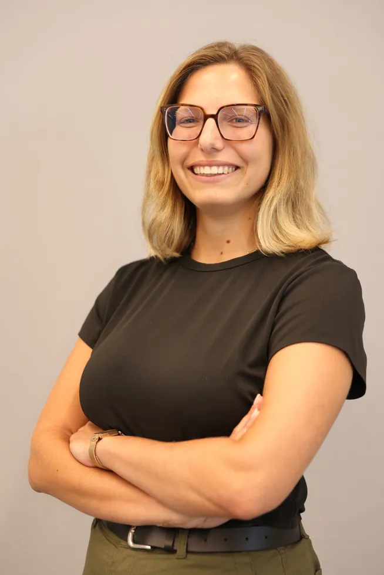

Business Administration student at Reichman University, specializing in Digital Innovation with a focus on AI. Currently on Erasmus exchange at WU Vienna.
"I turn people's needs into practical AI solutions and enjoy leading teams to deliver them."

Business Administration student at Reichman University, specializing in Digital Innovation with a focus on AI. Currently on Erasmus exchange at WU Vienna.
I turn people's needs into practical AI solutions and enjoy leading teams to deliver them.
Problem: Business Impact Analyses were collected and reviewed manually by BCM experts, taking excessive time. Built an AI workflow in Microsoft Copilot Studio to guide users through structured questions, validate responses, and prepare summaries for expert evaluation.
A nonprofit initiative to make mental health therapy and emotional support more accessible for discharged lone soldiers in Israel.
Conducted screening and due diligence on early-stage startups in climate tech and water innovation, leveraging AI workflows for market analysis.
Supported technology investment banking team focused on M&A and fundraising advisory deals ($10M to $20M) for high-growth tech ventures.
Collaborative business research project analyzing the technical and operational logistics of electric vehicles feeding stored battery energy back into the power grid.
Selected for outstanding performance to lead and train units of 15 recruits during mandatory service as a lone soldier.
Created an interactive resume portfolio using an autonomous AI agent in Antigravity IDE, converting historical Markdown CVs, integrating an intra-frame scrubbed 3D avatar, and building a responsive iOS frosted-glass design.
Two consecutive academic years (2024/25 & 2025/26) in BA Business Administration & Digital Innovation. Academic excellence with GPA 95.
Awarded for outstanding leadership and excellence in commanding basic training recruit units under high pressure during the COVID-19 pandemic.
Recipient of prestigious scholarship for former lone soldiers. Selected for the selective leadership Impact Track and social entrepreneurship accelerator.
Interested in AI product, business analysis, or leadership roles? I'd love to chat.